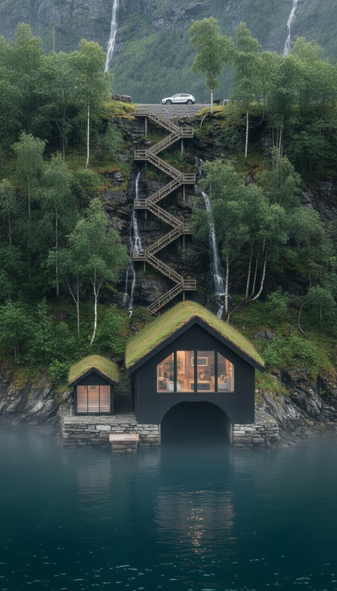
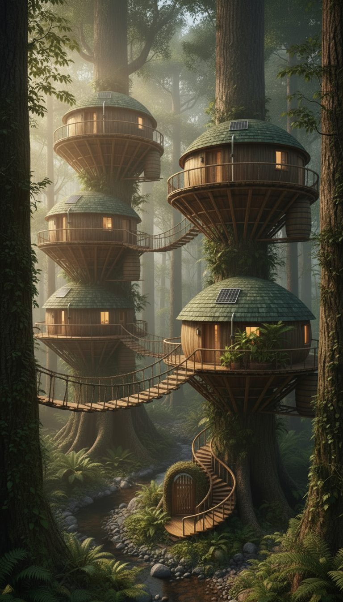
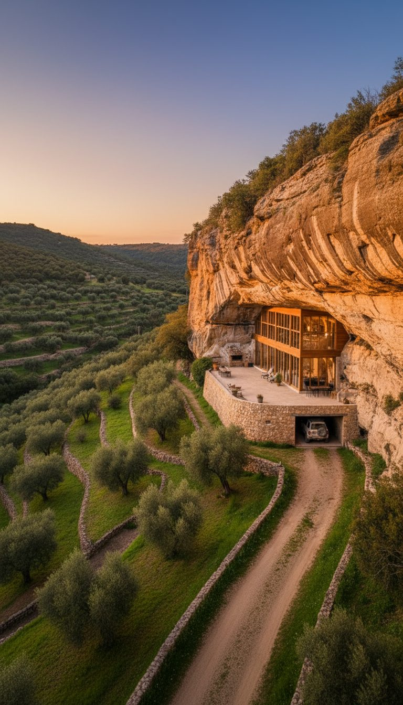
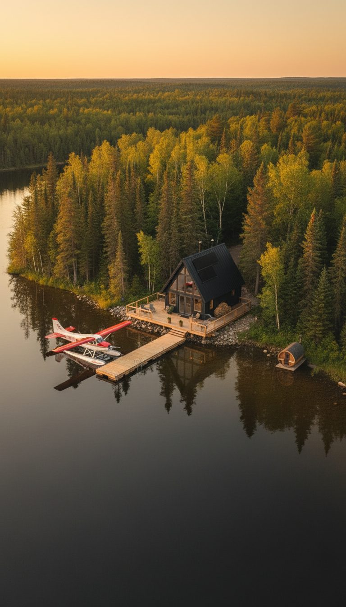
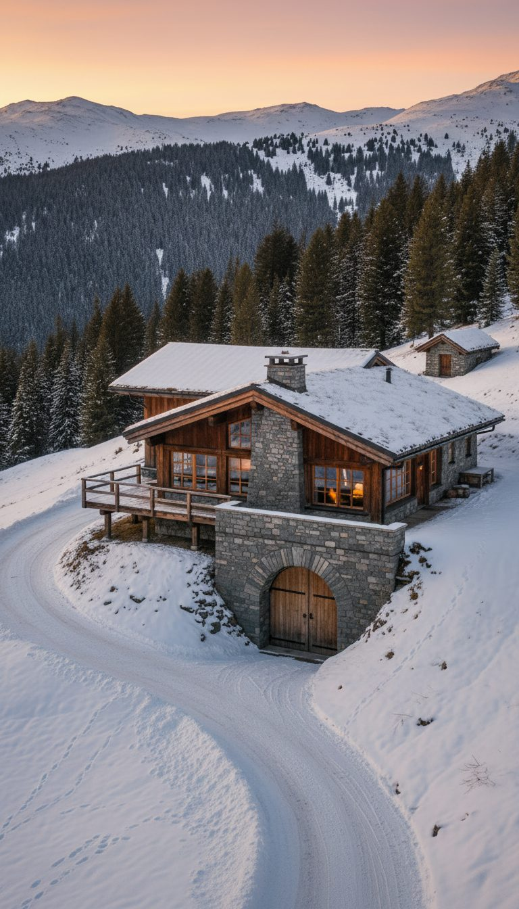
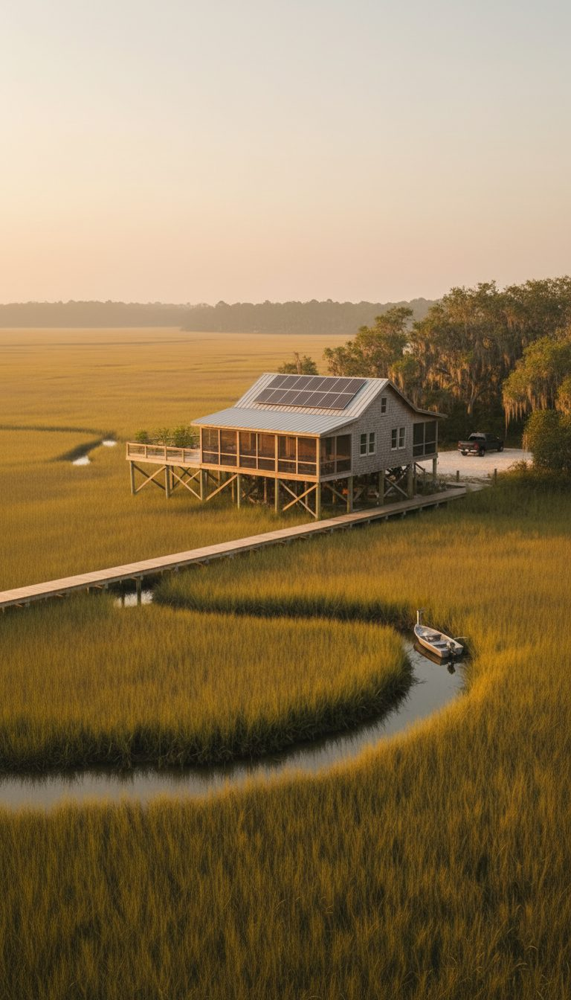
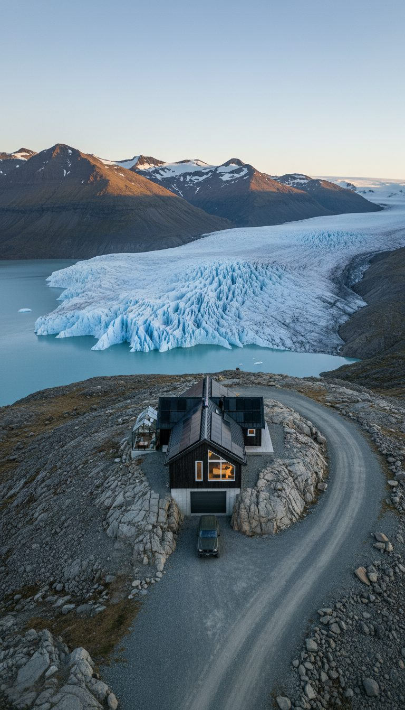
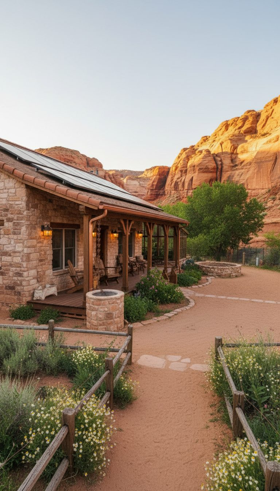

Stories
Published concept homes
Each story pairs stills from a Lock & Linen reel with the caption and voiceover already published — no invented facts.
Concept home
The Island Home
Teak stilt house on its own lagoon — one dock in, rain-catch roof, rock-cut cistern.
Read the story
Concept home
The Cliffside Glass House
Cantilevered glass house above the surf, reached only by funicular, with a rock-cut cellar below.
Read the story
Concept home
The Hidden Canyon House
Earth-walled house cut into a canyon wall, with one trail, one hidden gate and a fig courtyard.
Read the story
Concept home
The Lighthouse Hideout
Restored stone lighthouse and keeper's house on a rocky headland, reached by one gravel causeway.
Read the story
Concept home
The Missile Silo Home
A converted missile silo under the open prairie, with only a modest farmhouse and a flush hatch on top.
Read the story
Concept home
The Fjord Boathouse
Dark timber boathouse on dry-stone piers at the foot of a Nordic fjord, with a boat bay under the house.
Read the story
Concept home
The Volcanic Plateau House
Low basalt-and-charred-timber house on a black-sand volcanic plateau: one gravel track to a basalt-walled carport, a moss-planted roof, a geothermal hot pool, Faraday-lined walls and storerooms cut into the lava.
Read the story
Concept home
The Canopy Treehouse
Timber pods in the canopy: one spiral stair up, rope bridges between rooms, rain tanks, Faraday-lined pods and a vault down in the roots. *illustrative
Read the story
Concept home
The Cliff Monastery
A whitewashed retreat built down a sheer cliff, with terraced herb gardens, parking at the cliff-top road and motion-sensor stair lights. Faraday-lined stone walls, rock-cut stores in the cliff, a bell tower lookout and a walled terrace garden. One stair, one way in. *Illustrative figures.
Read the story
Concept home
The Cave Dwelling
A home built into a cliff overhang above stone-walled olive terraces, with a garage cut into the rock and motion-sensor lane lights. Faraday-lined walls, a rock-cut cellar and cistern, the overhang as the roof and a glass front in the cave mouth. One lane in, through the olives.
Read the story
Concept home
The Black A-Frame
Black A-frame reachable only by floatplane: wood stove, loft, lake through the glass, an ice house dug into the bank and Faraday-lined walls under the siding.
Read the story
Concept home
The Bunker Lodge
Stone fire, sheepskins and peaks in every window, with a vault door set into the mountain, Faraday-lined walls and a spring-fed cistern.
Read the story
Concept home
The Marsh Stilt House
Cypress stilt house over a golden salt marsh: one boardwalk across from a crushed-shell pad at the tree line, a screened porch, a raised garden deck, Faraday-lined walls and a pantry and cistern kept high above the tide. *illustrative
Read the story
Concept home
The Glacier Cabin
A black timber cabin set on a rock shelf above a tidewater glacier, with a sheltered glass greenhouse, a garage built into the rock plinth and motion-sensor lights along the moraine road. Faraday-lined walls, a rock-cut cold cellar for long-term storage, a solar steel roof and a glass corner facing the ice. One road in.
Read the story
Concept home
The Canyon Homestead
One road, one gate, canyon walls on every side — crops, goats, solar, and a root cellar.
Read the story
Concept home
The Sea-Cliff Homestead
Sea cliffs on three sides — one lane, one gate, raised beds, and a Faraday cage inside.
Read the story
Concept home
The Mountain Homestead
Granite behind, steep drops in front — one switchback road, spring water, solar roofs.
Read the storyGuide
Quiet security, softly furnished
Nine ideas from our AI concept homes — privacy by design, comfort by material.
Read the guide